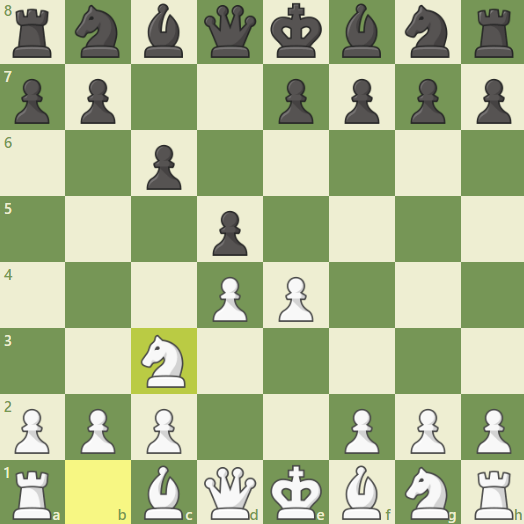

Obrona caro kann
Otwarcie Caro-Kann to jedno z najpopularniejszych i solidnych otwarć w szachach, stosowane głównie przez graczy czarnymi, którzy preferują solidne i elastyczne podejście do gry. Otwarcie to zaczyna się od ruchów:
1. e4 c6
Caro-Kann jest znane ze swojej solidności i stabilności, dając czarnym mocną i bezpieczną pozycję. Oto główne linie i idee tego otwarcia:
### Klasyczna linia (3. Sc3 i 3. Sd2)
1. e4 c6
2. d4 d5
3. Sc3 (lub 3. Sd2) dxe4
4. Sxe4
W tej linii czarne często kontynuują:
4... Gf5 (lub czasami 4... Sd7)
### Linia zaawansowana (3. e5)
1. e4 c6
2. d4 d5
3. e5
W tej wersji białe próbują natychmiast przejąć przestrzeń. Czarne odpowiadają zazwyczaj:
3... Gf5 (lub 3... c5, co prowadzi do gry w stylu obrony francuskiej)
### Linia wymiany (3. exd5)
1. e4 c6
2. d4 d5
3. exd5
Ta linia prowadzi do otwartych pozycji i częstych wymian:
3... cxd5
### Linia Panowa-Botwinnika
1. e4 c6
2. d4 d5
3. Sc3 dxe4
4. Sxe4 Sf6
5. Sxf6+ gxf6
W tej linii czarne podwajają swoje pionki, ale zyskują dynamiczne możliwości gry.
### System dwóch skoczków (3. Sc3 i 4. Sf3)
1. e4 c6
2. d4 d5
3. Sc3 dxe4
4. Sf3
Ta linia często prowadzi do gry w stylu Gambitu Morra, ale z bardziej stabilną strukturą pionową.
### Główne idee
1. **Struktura pionowa**: Czarne dążą do solidnej struktury pionowej, gdzie pionki na c6 i d5 kontrolują centrum i przygotowują możliwość ruchu c5.
2. **Bezpieczny rozwój**: Czarnym łatwiej rozwijać figury bez konieczności ryzykownych posunięć, co daje stabilne pozycje do gry środkowej.
3. **Elastyczność**: Caro-Kann jest elastycznym otwarciem, które może dostosować się do różnych planów białych.
### Typowe plany dla czarnych
1. Rozwój gońca na f5 lub g4, który daje aktywną pozycję i presję na białe.
2. Rozwój skoczków na f6 i d7, przygotowując ewentualne ruchy e5 lub c5, aby kontrować centrum.
3. Wymiana piona na e4, aby uzyskać wolną grę dla figur i kontrolę nad centrum.
Caro-Kann jest szczególnie popularne na poziomie arcymistrzowskim, ponieważ daje czarnym solidne, ale jednocześnie aktywne możliwości. Znani gracze jak Anatolij Karpow czy Viswanathan Anand często korzystali z tego otwarcia, co potwierdza jego skuteczność i elastyczność.
